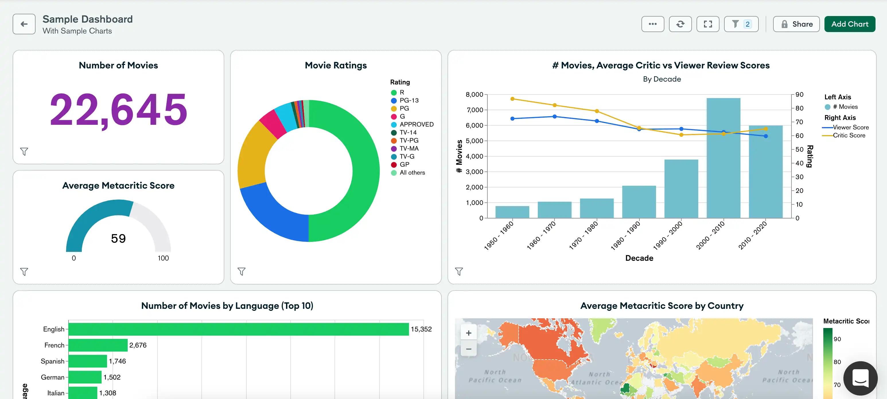

Recursos
Documentação
MongoDB Atlas
O MongoDB Atlas é um serviço de banco de dados multinuvem desenvolvido pelas mesmas pessoas que desenvolvem o MongoDB. O Atlas simplifica a implantação e o gerenciamento de seus bancos de dados, oferecendo a versatilidade que você precisa para criar aplicativos globais resilientes e de alto desempenho nos fornecedores de serviços de nuvem da sua escolha.

Documentação do Servidor
O MongoDB é um banco de dados de documentos projetado para facilitar o desenvolvimento e o dimensionamento de aplicativos.
Você pode executar o MongoDB nos seguintes ambientes:
- MongoDB Atlas: O serviço totalmente gerenciado para implantações MongoDB na nuvem, que oferece alta disponibilidade, segurança e escalabilidade automática sem a necessidade de gerenciamento manual de infraestrutura.
- MongoDB Enterprise: A versão autogerenciada e baseada em assinatura do MongoDB, que inclui recursos avançados de segurança, suporte técnico dedicado e ferramentas de administração para grandes corporações.
- MongoDB Community: A versão de código aberto, gratuita e autogerenciada do MongoDB, que oferece todos os recursos essenciais do MongoDB para desenvolvedores e pequenas equipes que desejam construir e escalar aplicativos sem custos iniciais.
Guias de Introdução
Os Guias de Introdução são projetados para ajudar novos usuários a começar com o MongoDB rapidamente. Esses guias fornecem instruções passo a passo para realizar tarefas essenciais, como a criação de bancos de dados e coleções, inserção e consulta de dados, e o uso de operadores avançados. São recursos ideais para iniciantes que desejam aprender MongoDB de forma prática e direta.
Ferramentas e Conectores
Migradores
-
Relational Migrator
Migre dados do seu banco de dados relacional para o MongoDB com facilidade, utilizando uma ferramenta projetada para simplificar o processo de migração e garantir a integridade dos dados. -
Migração em Produção do Atlas
Utilize a Migração em Produção do Atlas para extrair dados de implantações MongoDB existentes, arquivos JSON ou CSV e importá-los para o Atlas. Este processo guiado facilita a transição para a plataforma Atlas, garantindo mínima interrupção. -
Cluster-to-Cluster Sync
Sincronize continuamente os dados entre clusters do MongoDB em ambientes locais, nuvem privada, Atlas, e ambientes híbridos. O Cluster-to-Cluster Sync assegura que seus dados estejam sempre atualizados entre diferentes implantações. -
Ferramentas de Banco de Dados
Utilize as Ferramentas de Banco de Dados para exportar dados de um cluster MongoDB para arquivos JSON, BSON, CSV ou TSV, e importá-los para outro cluster. Essas ferramentas são essenciais para a migração de dados e a manutenção de backups.
Exploração e Visualização de Dados
-
Compass
Explore visualmente seus dados no MongoDB com o Compass, que oferece funcionalidades completas de CRUD, além de ferramentas para gerenciamento de índices e desempenho. -
Driver PyMongoArrow
Use o Driver PyMongoArrow para carregar conjuntos de resultados de consultas do MongoDB como Pandas DataFrames, arrays NumPy e tabelas Apache Arrow, facilitando a análise e manipulação de dados em Python. -
Atlas Charts
Crie, compartilhe e incorpore visualizações de dados MongoDB com o Atlas Charts, uma ferramenta poderosa para a análise visual de seus dados.

Integrações de IDE
-
Extensão VS Code
Gerencie seus dados diretamente no Visual Studio Code com a Extensão VS Code para MongoDB, permitindo que você visualize, edite e execute operações de banco de dados dentro do seu ambiente de desenvolvimento. -
Analisador C#
O Analisador C# integra-se com o Visual Studio, permitindo que você entenda e solucione consultas e agregações MongoDB diretamente em seu IDE preferido.
Conectores
-
BI Connector
Conecte o MongoDB às suas plataformas de Business Intelligence favoritas com o BI Connector, permitindo que você visualize, crie gráficos e gere relatórios detalhados sobre seus dados do MongoDB. -
Conector Kafka
Crie pipelines robustos que transmitem eventos entre aplicativos utilizando o Conector Kafka, integrando MongoDB com o Apache Kafka para fluxos de dados em tempo real. -
Conector do Spark
Utilize o Conector do Spark para analisar dados do MongoDB com as bibliotecas do Apache Spark, permitindo aprendizado de máquina, gráficos e consultas SQL diretamente sobre seus dados. -
Atlas SQL
Com o Atlas SQL, você pode criar e executar queries SQL para visualizar, criar gráficos e gerar relatórios sobre seus dados do MongoDB usando ferramentas de business intelligence relacionais.
Ferramentas de Gerenciamento
-
Cloud Manager
O Cloud Manager é uma plataforma de gerenciamento hospedada que permite monitorar, automatizar e fazer backup de implantações autogerenciadas de MongoDB, garantindo alta disponibilidade e integridade dos dados. -
Ops Manager
Utilize o Ops Manager para implementar, monitorar, fazer backup e expandir o MongoDB em sua própria infraestrutura, com funcionalidades avançadas de automação e gerenciamento. -
Operadores de Kubernetes do MongoDB
Aprenda a executar o MongoDB no Kubernetes com o Operadores de Kubernetes do MongoDB, facilitando o gerenciamento e escalabilidade em ambientes de contêiner. -
Atlas Kubernetes Operator
O Atlas Kubernetes Operator permite gerenciar recursos do MongoDB Atlas diretamente utilizando Kubernetes, integrando suas operações de banco de dados com suas práticas de DevOps. -
Atlas Terraform Provider
Gerencie recursos no MongoDB Atlas utilizando o Atlas Terraform Provider, automatizando a infraestrutura como código com o Terraform para um gerenciamento eficiente e repetível.
Informações sobre IA Generativa
- Perguntas Frequentes sobre IA Generativa
Explore as Perguntas Frequentes sobre IA Generativa para aprender como os aplicativos MongoDB podem aprimorar a experiência do usuário utilizando a inteligência artificial generativa.
Tutoriais e Guias
-
Tutorial de Início Rápido Um guia passo a passo para começar a usar o MongoDB.
-
Melhores Práticas de Modelagem de Dados Saiba como modelar dados efetivamente no MongoDB.
MongoDB Drivers
Você pode conectar seu aplicativo à sua implantação do MongoDB Atlas ou a um cluster do MongoDB auto-hospedado usando uma das bibliotecas oficiais do MongoDB.
As seguintes bibliotecas são oficialmente suportadas pelo MongoDB. O MongoDB desenvolve ativamente novos recursos, adiciona aprimoramentos de desempenho, corrige bugs e aplica patches de segurança.
 C
C C++
C++- C#
 Go
Go- Java
 Kotlin
Kotlin- Node.js
- PHP
- Python
- Ruby
- Rust
- Scala
- Swift
- TypeScript
Bibliotecas apoiadas pela comunidade em destaque
 Elixir
Elixir- Mongoose
- Prisma
 R
R